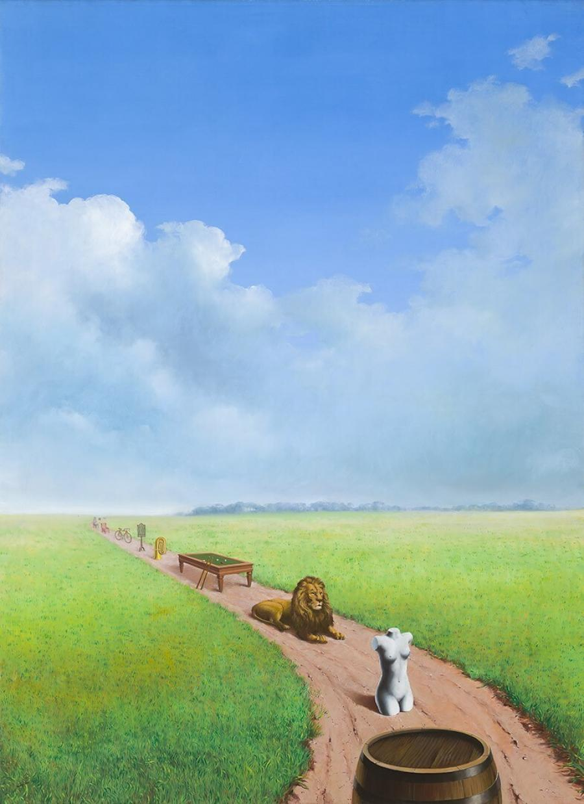
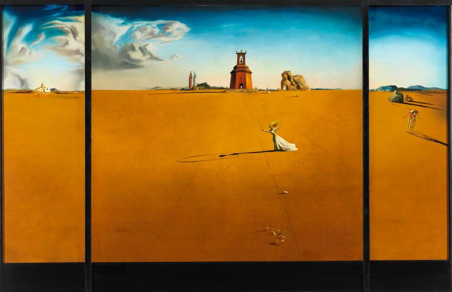

René Magritte
- Career
Popular interest in Magritte's work rose considerably in the 1960s, and his imagery has influenced
pop, minimalist, and conceptual art.[17] In 2005 he was 9th in the Walloon version of De Grootste
Belg (The Greatest Belgian); in the Flemish version he was 18th.
- Personal life
Magritte married Georgette Berger in June 1922. Georgette was the daughter of a butcher in Charleroi,
and first met Magritte when she was 13 and he was 15.
- Artists influenced by Magritte
Magritte's use of simple graphic and everyday imagery has been compared to that of the pop artists.
His influence in the development of pop art has been widely recognized,
hier vind je meer info over het Surrealisme

Salvador Dalí
- Vroege periode (1917-1927)
In zijn vroege periode maakte Dalí hoofdzakelijk werken met als onderwerp het landschap in de
omgeving van Figueres en het vissersplaatsje Cadaqués. Hij werd geïmponeerd door het grillige, bijna
buitenaardse landschap van Cap de Creus, het meest oostelijke puntje van het Iberisch Schiereiland
waar hij graag kwam. Zijn vroegste werken tonen al zijn verwantschap met het impressionisme ,
kubisme en expressionisme.
- Overgangsperiode (1927-1928)
Deze periode wordt gekarakteriseerd door heftig experimenteren. De doeken hebben vaak verschillende
texturen, gemaakt met verscheidene verfkunstharsen en een collage van grof zand en grind van
dichtbijgelegen stranden.
- Surrealistische periode (1929-1940)
De surrealisten geloofden dat logica alleen niet voldeed, dus wendden zij zich tot het onderbewuste
en dromen in een poging de grenzen van de rede te overschrijden.
Dalí stond ook bekend om zijn snor, die dun, langwerpig en sierlijk gebogen was. Als antennes wezen beide
snorpunten omhoog of waren gekruld. Dalí beweerde dat hij via zijn snorharen inspiratie uit de kosmos
ontving. .
